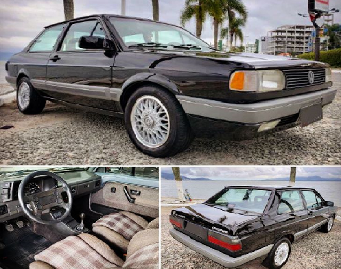
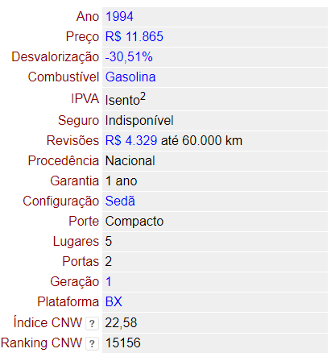
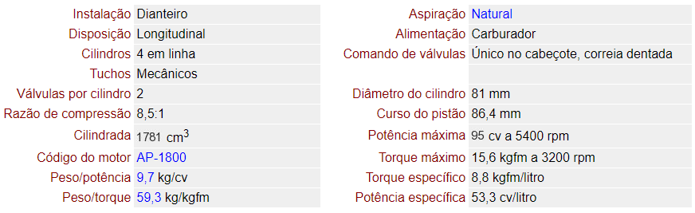

A versão de entrada Voyage CL AP 1.8 1994, passou a ser o segundo carro com motorização 1.6 mais barato do Brasil, sendo mais caro apenas que o VW Fusca, para se ter uma ideia, a versão CL 1.8 do Gol, ainda custava mais caro que o Voyage CL AP.
Informações Gerais:
Motor:
Consumo (lembrando que o combustivel GASOLINA):